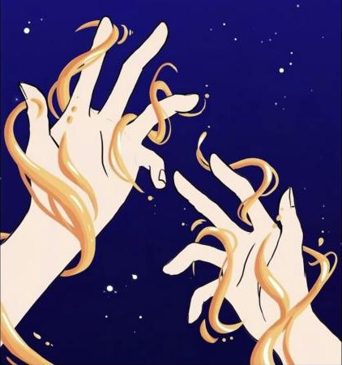

Louise et Margot
Musique pour une bande dessinée · septembre 2026
Un thème pour piano, écrit pour accompagner une bande dessinée de deux planches de Mime, présentée au concours de bande dessinée de Colomiers 2026.

- Composition
- Piano
- Image et son
Mon rôle
Composition du thème pour piano.
Crédits
Bande dessinée : Mime. Musique : Thomas Dechaud-Fauchet.